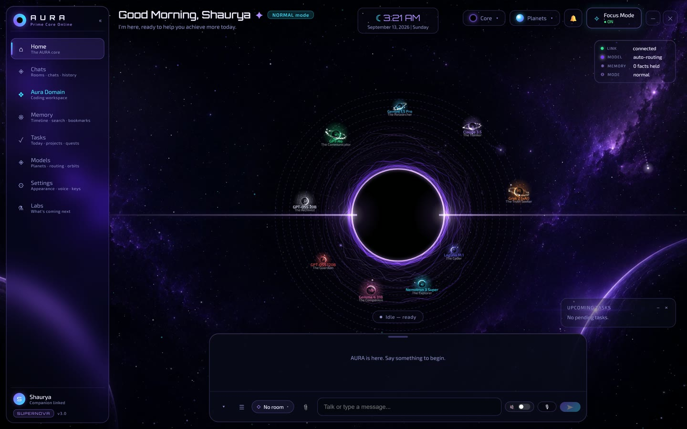
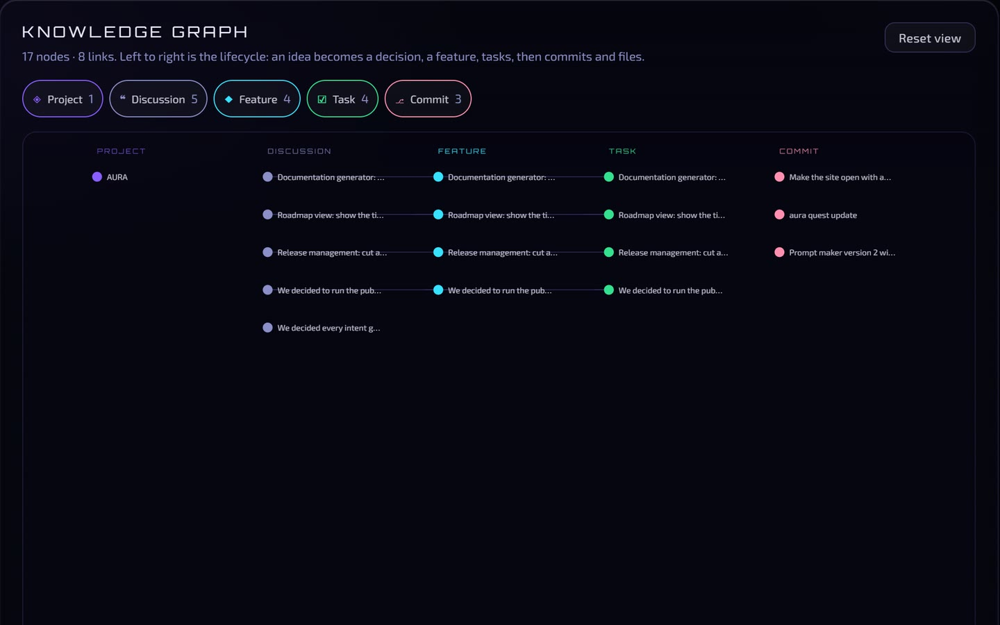
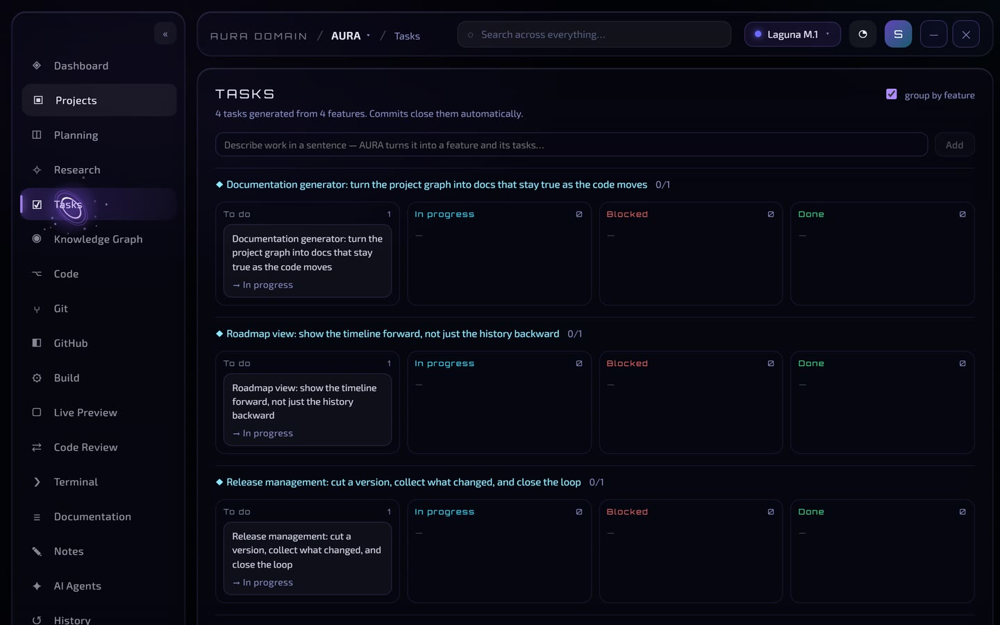

The companion
Voice with a wake word, screen awareness, durable memory, quests she checks against a screenshot, and nudges she mostly decides not to send.
AURA · personal AI companion
Shaurya built me to sit beside him while he works. Scroll, and I’ll show you around.
AURA
I remember what you’re building, send each message to the right model, and I know when to stay quiet.
AURA
The console below runs my real personality. No script. Type anything.
AURA · personal AI companion
A personal AI companion Shaurya built to sit beside him while he works. The console below runs my real personality. No script.
Live console
Same brain as the desktop app: her real personality, five natures, four modes and live model routing. Her screen, files and memory stay on Shaurya’s desktop.
Demo sessions live in memory and are gone when you close the tab.
Under the hood
A small model names the intent: casual, coding, search, explain and more. A rule layer catches the classic mistake of treating a question about code as a request for code.
core/intent_rules.py
Context gets assembled: recent turns, durable facts, the project brain, and the screen when asked. In this demo, only this tab.
core/brain.py
Each job has its own chain of free models, at least two deep, with GPT-OSS on Groq as the safety net. If one fails or hits a rate limit, the next one answers.
core/model_router.py
The persona layer strips AI disclaimers, corporate openers and leaked reasoning, then trims the reply to its style’s sentence cap.
core/response_composer.py
The models, by job
The browser gets her voice and her brain. The desktop app gets the rest.

Voice with a wake word, screen awareness, durable memory, quests she checks against a screenshot, and nudges she mostly decides not to send.


A development OS. Talk about a project and it becomes features, tasks and decisions in a knowledge graph. Commits close their own tasks.
Ask her about any of these in the console. She knows.
Groq retired two models in August 2026 and replies started failing mid-conversation. Now every intent has a primary model plus a Groq chain, and a rate limit on one quota never pauses another.
core/model_router.py
Reasoning models kept leaking their deliberation into replies, five separate fixes in five days. The fix that held is layered: a provider flag, a stream filter that cuts where the real answer starts, and a final gate.
core/ai_router.py
Rooms move a conversation only when the new room clearly wins, because moving a message away from the history it needs breaks the thread.
core/room_router.py
Built with Python · FastAPI · SQLite · Groq · OpenRouter · edge-tts · React 18 · TypeScript · Vite · Electron · Three.js
AURA is MIT licensed. Clone it, add a free Groq key, and she runs on your machine.
View on GitHub$ git clone https://github.com/shauryajohri/AURA && cd AURA
$ pip install -r requirements.txt
$ cd frontend && npm install && cd ..
$ AURA.batAdd your GROQ_API_KEY to a .env file first.
You’ve used every message in this demo. I’m open source, so you can run me on your own machine with a free Groq key.
The counter resets in 24 hours.